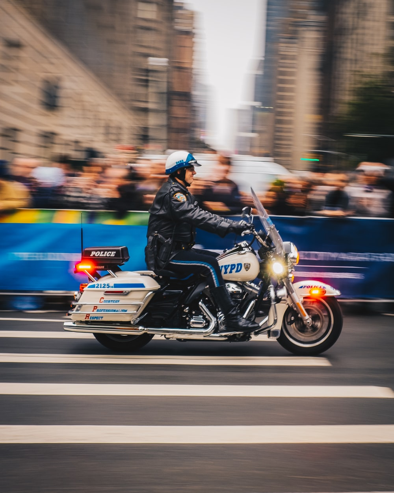

Helping Others
경찰의 역활은 무었인가?
Police
officers help everyone in the community.
A storeowner calls the
police
if something is stolen.
A lost
child
asks the police for help.
A homeowner calls the police if a robber breaks into his or her home.

Detectives are a type of police officer. They gather facts and clues to help solve crimes.